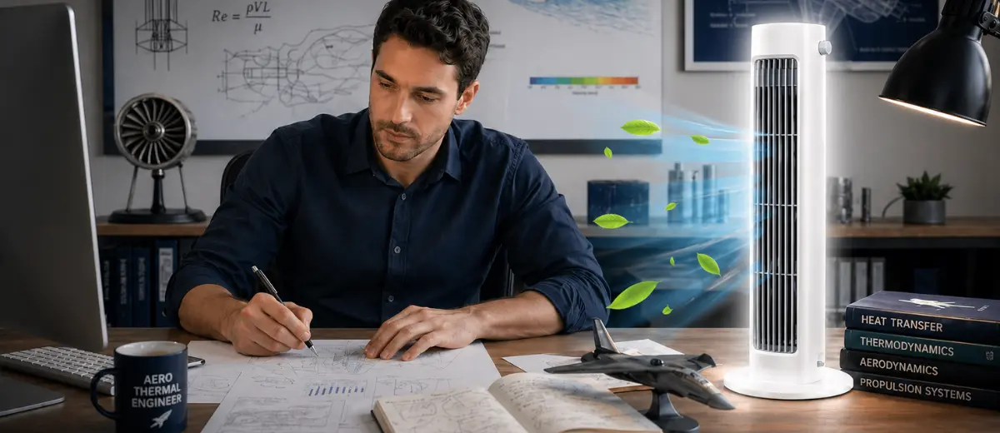
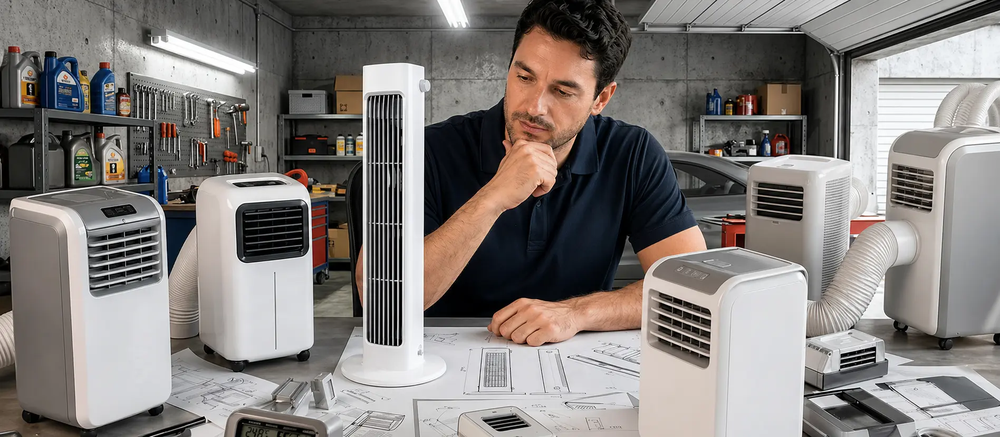
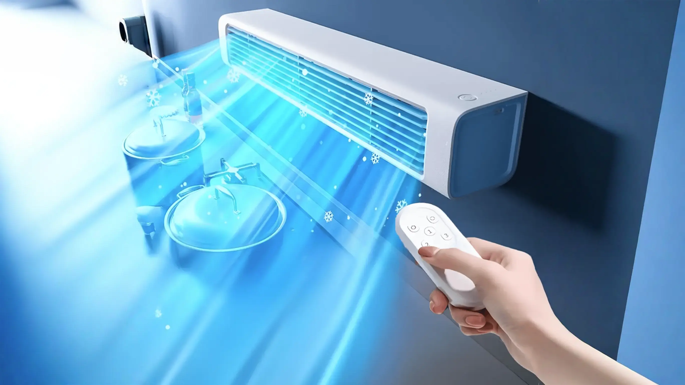
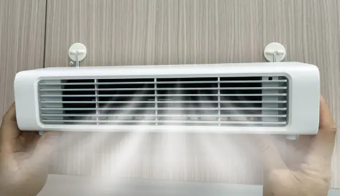
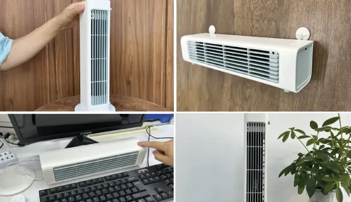
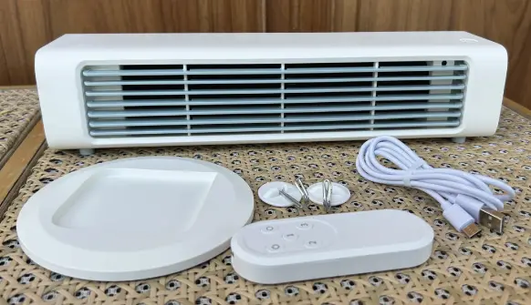

Das 89€-Gerät, das teure Klimaanlagen überflüssig macht
Ein Thermik-Ingenieur entwickelte eine kompakte Lösung, die Räume in wenigen Minuten kühlt — ohne Fensterkit, ohne Installation und zu einem Bruchteil der Kosten.

Berlin — Thomas Berger (54), Thermik-Ingenieur mit Erfahrung in der Luft- und Raumfahrt, wollte nicht länger akzeptieren, dass ein kühler Raum im Sommer mehrere Hundert Euro Anschaffungskosten und hohe Stromrechnungen bedeutet. Also entwickelte er ein kompaktes Gerät, das warme Raumluft ansaugt, durch eine präzise Kühlkammer leitet und konzentrierte kühle Luft zurück in den Raum bläst.
„400€ für eine Klimaanlage? Es muss eine bessere Lösung geben."
Genau das fragte sich Berger, als er wieder vor denselben Optionen stand: Fenstergerät, mobile Klimaanlage oder teurer Technikertermin. Jede Lösung bedeutete :
- hohe Anschaffungskosten
- laute Geräte
- steigende Monatsrechnungen
Das Problem, das die Branche nicht lösen wollte

„Eine herkömmliche Klimaanlage zieht oft über 1.000 Watt, braucht einen Abluftschlauch und benötigt lange, bis der Raum angenehm wird", erklärt Berger. „Die Technik für effizientere Kühlung existiert längst. Sie musste nur in ein Gerät passen, das normale Haushalte wirklich nutzen können."
Mit über zehn Jahren Erfahrung in thermischen Kontrollsystemen — der Technologie, die empfindliche Instrumente vor Überhitzung schützt — hatte Thomas den technischen Hintergrund, um genau das auszuprobieren.
Meinen Raum in 2 Minuten kühlenDie Idee: echte Kühlung ohne schwere Maschine
„Der Schlüssel liegt darin, warme Umgebungsluft effizient durch eine interne Kühlkammer zu bewegen und sie als spürbar kühlen Luftstrom wieder auszugeben", sagt Berger.
- Kein schwerer Kompressor
- Kein Fensterkit
- keine Werkzeuge
Nach mehreren Monaten Prototypenbau testete er verschiedene Luftstrom-Geometrien, Kühlraten und Kammerkonfigurationen. Das Ergebnis war ein tragbares Gerät, das in wenigen Minuten spürbare Abkühlung liefert.
Das Ergebnis?
Spürbare Kühlleistung in jedem Raum in weniger als zwei Minuten — ohne sperrige Geräte, Abluftschlauch oder teure Installation.
Der erste Test: Die Nachbarn konnten es kaum glauben
„Ich stellte den Prototypen in meinem Wohnzimmer auf, als es über 33°C hatte, und drückte den Knopf", erinnert sich Berger. „Innerhalb kurzer Zeit war der Unterschied deutlich spürbar. Ich testete es immer wieder, nur um sicherzugehen."
Was dann geschah, überraschte sogar ihn.
„Mein Nachbar kam vorbei — er ist pensionierter Klimatechniker mit 35 Jahren Berufserfahrung. Er betrat den Raum, prüfte das Thermometer, schaute das Gerät an und wurde plötzlich still. Dann fragte er, wie schnell er selbst eins bekommen könne."
Kurz darauf wollte jeder in der Straße eins haben. Aus diesem Prototyp wurde Qinux BreezaMax.
Vom Garagen-Experiment zu 60.000 Haushalten
Was als persönliche technische Herausforderung begann, wurde schließlich zu Qinux BreezaMax — einem tragbaren Kühlgerät, das inzwischen in mehr als 60.000 Haushalten eingesetzt wird.
Warum Qinux BreezaMax so beliebt ist

- Kühlt jeden Raum von 34°C auf 17°C in weniger als 2 Minuten — getestet, wiederholbar, zuverlässig
- Verbraucht bis zu 90% weniger Strom als eine Fensterklimaanlage — läuft stundenlang mit minimalem Energieverbrauch
- Keine Installation erforderlich — einfach einstecken und einen Knopf drücken. In 30 Sekunden einsatzbereit
- Flüsterleise mit unter 40 Dezibel — leiser als eine Bibliothek, läuft problemlos während des Schlafens
- Komplett tragbar bei unter einem Kilogramm — mühelos vom Schlafzimmer ins Büro oder Wohnmobil mitnehmen
Für wen ist Qinux BreezaMax ideal?
Qinux BreezaMax wurde für alle entwickelt, die:
- Ein Schlafzimmer, Wohnzimmer oder Homeoffice ohne fest installierte Klimaanlage kühlen möchten
- Keine 200€–300€ pro Monat mehr zahlen wollen, nur um es zuhause angenehm kühl zu haben
- Echte Kühlleistung in Mietwohnungen erhalten möchten, in denen Fensterklimaanlagen nicht erlaubt sind
- Ältere Eltern oder kleine Kinder kühl halten möchten, ohne das zentrale Kühlsystem laufen zu lassen
- Tragbare Kühlung für Wohnmobile, Garagen oder überdachte Außenbereiche genießen möchten
Warum die Nachfrage nach Qinux BreezaMax so hoch ist
Da der Sommer immer früher beginnt und Hitzewellen jedes Jahr stärker werden, steigt die Nachfrage nach Qinux BreezaMax rasant an.
„Wir kommen mit der Produktion kaum hinterher", gibt Berger zu.
Das Problem: Als kleines deutsches Unternehmen kann Berger keine unbegrenzten Mengen herstellen.
„Aktuell haben wir noch etwa 3.200 Geräte auf Lager. Sobald sie ausverkauft sind, dauert die nächste Lieferung mindestens 8 Wochen."
Das sagen Kunden

„Ich besitze eine Frigidaire-Fensterklimaanlage für 1340€. An 90% der Nächte kühlt der Qinux BreezaMax mein Schlafzimmer genauso gut — und ich muss nicht 45 Minuten warten, bis der Raum abgekühlt ist. Meine Stromrechnung ist letzten Monat um 140€ gesunken."

„Meine Nachbarin kam in mein Wohnzimmer und fragte, ob ich endlich die zentrale Klimaanlage repariert hätte. Hatte ich nicht. Ich zeigte ihr den Qinux BreezaMax. Sie bestellte noch vor dem Gehen einen. Am nächsten Morgen schrieb sie mir: erste durchgeschlafene Nacht seit drei Wochen."

„Ich habe es für meinen 79-jährigen Vater gekauft, der wegen der Stromkosten keine zentrale Klimaanlage benutzen wollte. Am nächsten Morgen rief er mich an und sagte, es sei die kühlste Nacht gewesen, die er seit Jahren hatte. Jeden Cent wert."
Aktuell — 50% Einführungsrabatt solange der Vorrat reicht
Wer jetzt bestellt, kann Qinux BreezaMax zum Einführungspreis von unter 90€ erhalten — fast zum halben regulären Verkaufspreis. Dieses zeitlich begrenzte Angebot gilt nur für die aktuelle Produktionscharge.
Schnell sein — fast ausverkauft
Sichern Sie sich jetzt Ihre Bestellung mit 50% Rabatt
HINWEIS: Dieses Angebot ist NICHT auf Amazon oder eBay verfügbar.
Geld-zurück-Garantie